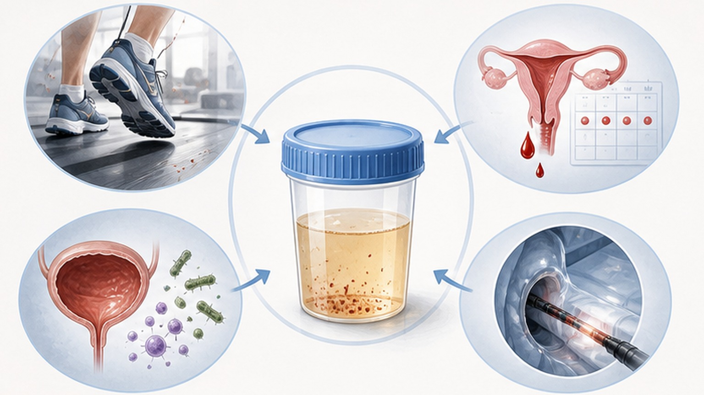
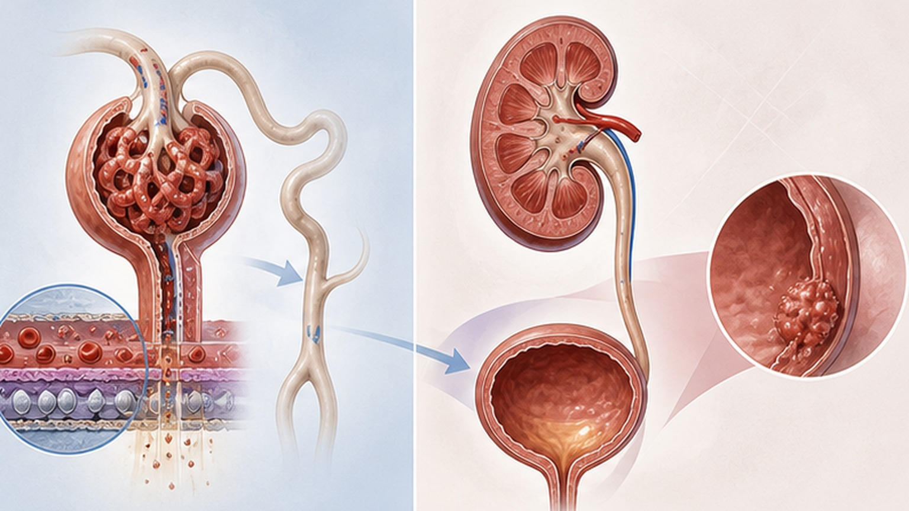
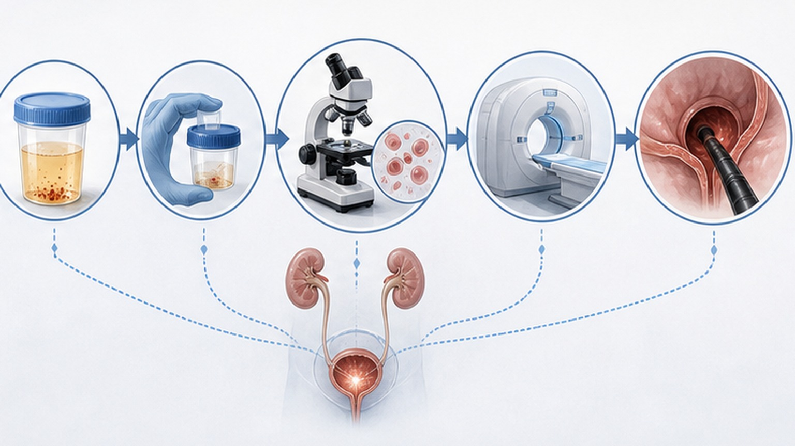

원인과 위험도에 따라 필요한 검사만 고릅니다
현미경으로 적혈구를 직접 확인해야 합니다
소변 채취 상황과 증상을 함께 확인합니다

소변 증상과 검사 결과로 원인을 좁힙니다
동반 소견에 따라 진료 방향이 달라집니다

2025년 지침에서는 여성의 나이만으로 고위험이 되지 않습니다
불필요한 검사와 놓치는 위험을 함께 줄입니다
| 위험도 | 주로 하는 평가 |
|---|---|
| 낮은 위험 | 위험이 낮다면 6개월 안에 소변검사를 다시 해 혈뇨가 남아 있는지 확인합니다. |
| 중간 위험 | 중간 위험이면 방광경과 콩팥 초음파를 권합니다. 방광경을 미루는 경우에는 대체 검사와 12개월 내 재평가를 상의합니다. |
| 높은 위험 | 높은 위험이면 방광경과 요로를 보는 CT 검사를 권합니다. 조영제를 쓸 수 없다면 본인에게 맞는 대체 검사를 상의합니다. |
| 콩팥 질환 의심 | 단백뇨·고혈압·부종처럼 콩팥 질환이 의심되면 콩팥 기능과 단백뇨를 확인하고 신장내과 진료를 고려합니다. |
검사 결과를 단계별로 확인합니다
정해 둔 재검 날짜보다 증상 변화가 우선입니다

검사 결과를 보관하고 정해진 재검을 받으세요
QR을 스캔하면 같은 자료를 휴대폰에서 다시 열 수 있습니다